Missile and Munition Systems (continued) |
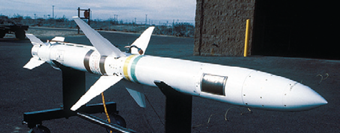 |
AGM-88 High Speed Anti-Radiation Missile (HARM) The AGM-88 is an air-to-surface tactical anti-radiation missile used to destroy or suppress enemy radar threats at standoff range homing in on source radar emissions. |
EELV The Boeing Delta IV and Lockheed Martin Atlas V Evolved Expendable Launch Vehicle provide the Air Force and the nation rapid and reliable access to space with a standardized launch capability. |
|
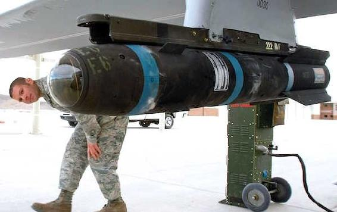 |
AGM-114 Hellfire Missile Originally developed for anti-armor use, the laser-guided AGM-114 Hellfire is a family of 100-pound class guided air-to-surface missiles for use against fixed and moving targets. It has multi-mission, multi-target precision-strike ability, and can be launched from multiple both rotary and fixed-wing aircraft including Remotely Piloted Aircraft. |
AGM-129A Advanced Cruise Missile (ACM) The AGM-129A is a subsonic, low-observable air-to-surface strategic nuclear missile with significant range and accuracy. The ACM’s external shape is optimized for low observables characteristics and includes forward swept wings and control surfaces, a flush air intake and a flat exhaust. |
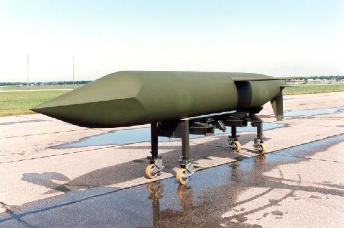 |
Missile and Munition Systems (continued) |
AGM-158 Joint Air-to-Surface Stand-Off Missile (JASSM) The AGM-158 is a long range, conventional, air-to-ground, precision standoff missile to destroy high-value, well-defended, fixed and relocatable targets. |
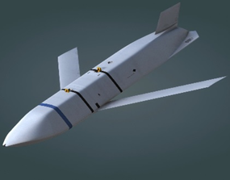 |
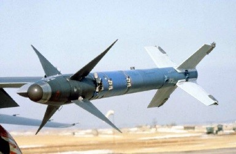 |
AIM-9M/X Sidewinder The AIM-9M/X is a fighter-borne supersonic, short range, passive infrared heat-seeking air-to-air missile with a high explosive warhead. The initial production version, designated AIM-9B, entered the Air Force inventory in 1956. |
AIM-120 Advanced Medium-Range Air-toAir Missile (AMRAAM) The AIM-120 is a supersonic, medium range, active radar guided air-to-air missile with a high explosive warhead. It has an all-weather, beyond-visual-range capability that improves the aerial combat capabilities of U.S. and allied aircraft to meet current and future threat of enemy air-to-air weapons. |
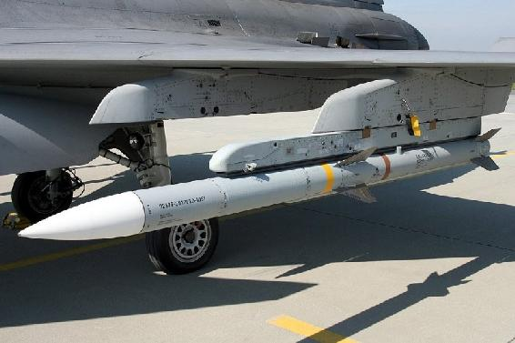 |
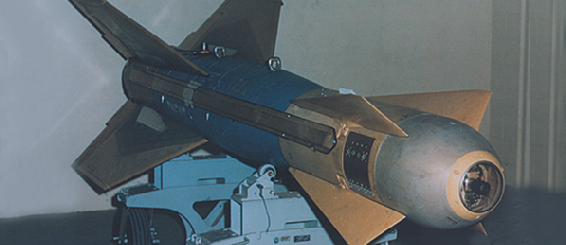 |
GBU-15 The GBU-15 is unpowered glide munition that employs elecro-optical or infrared terminal seeker for a standoff attack of high value ground targets. The rear control section consists of four wings that are in an "X"-like arrangement with trailing edge flap control surfaces for flight maneuvering. |
Missile and Munition Systems (continued) |
GBU-31/32/38/54 Joint Direct Attack Munition (JDAM) Joint Direct Attack Munition is a joint Air Force and Navy system used to upgrade the existing inventory of general purpose bombs by integrating them with GPS, laser and inertial guidance system tail kits to provide accurate adverse weather delivery from very low to very high altitudes. JDAM enables multiple weapons to be directed against single or multiple targets on a single pass. |
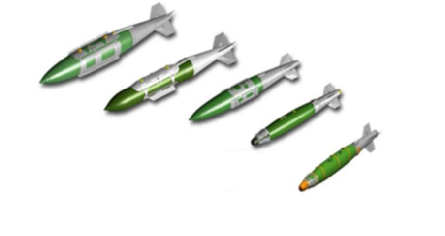 |
|
GBU-39
Small Diameter Bomb (SDB) The SDB is an extended range all-weather, 250-pound class, guided munition. The SDB relies on GPS to provide navigation to the target. It is capable of destroying fixed and stationary targets. SDB increases aircraft loadout, decreases the logistical footprint, decreases collateral damage, and improves aircraft sortie generation times. |
GBU-43
Massive Ordinance Air Blast (MOAB) The MOAB is a 21,000-pound, guided, high-explosive munition designed for anti-personnel and obstacle clearance purposes. It rests on a cradle inside an airdrop aircraft platform and is extracted by a drogue parachute. After extraction from the aircraft, the MOAB is guided to the target by fixed wings and grid fins. |
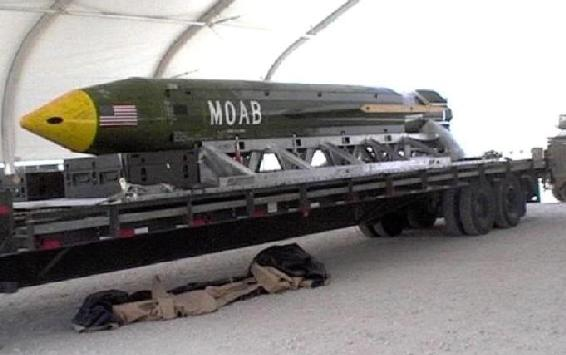 |

|
GBU-57
Massive Ordinance Penetrator The Massive Ordnance Penetrator (MOP) is a 30,000-pound guided, earth-penetrating weapon system designed to accomplish the difficult, complicated mission of reaching and destroying targets in hardened and deeply-buried facilities. The 20.5-foot long bomb carries more than 5,300 pounds of explosives and can reach targets as far as 200 feet underground before exploding. |
Missile and Munition Systems (continued) |
LGM-30G
Minuteman III The LGM-30G Minuteman intercontinental ballistic missile (ICBM) is an element of the nation's strategic deterrent forces under the control of the Air Force Global Strike Command.The Minuteman III is an inertially guided, intercontinental ballistic missile. Minuteman III is capable of delivering up to 3 multiple independently targetable reentry vehicles. It provides a highly survivable, quick-reaction component to the nuclear Triad. |
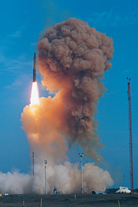 |
PAVEWAY Family of Guided Bombs PAVEWAY series laser-guided bomb kits transform traditional 500, 2,000, and 5,000-pound bomb bodies into precision-guided, air-to-ground munitions for targeting of soft and hardened targets. The PAVEWAY series consists of GBU-10/24/27/28. |
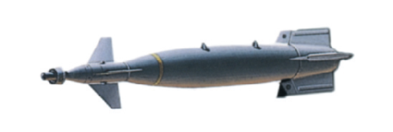 |
Section 20C—Air Force Information
20.5. Air Force Vocabulary
Many industries, such as the medical industry and the computer industry, have their own technical jargon. However, there may be perhaps no other industry in the world that matches up with the amount of industry-specific speech as that possessed by the military. To eliminate confusion terms and acronyms are published as attachments within official Air Force publications.
20.5.1. The Joint Publication (JP) 1-02, Department of Defense Dictionary of Military and Associated Terms, sets forth standard United States military and associated terminology to encompass the joint activity of the Armed Forces of the United States. These military and associated terms, together with their definitions, constitute approved Department of Defense terminology for general use by all Department of Defense components.
20.5.1.1 Purpose. This publication supplements standard English-language dictionaries and standardizes military and associated terminology to improve communication and mutual understanding within Department of Defense, with other federal agencies, and among the United States and its allies.
20.5.1.2. Application. This publication applies to the Office of the Secretary of Defense, the Services, the Joint Staff, combatant commands, Department of Defense agencies, and all other Department of Defense components. It is the primary terminology source when preparing correspondence, to include policy, strategy, doctrine, and planning documents.
20.5.1.3. Publication Format. JP 1-02 is published outlining two basic parts:
20.5.1.3.1. Terms and definitions. These are annotated with the source publication.
20.5.1.3.2. Abbreviations and acronyms. The source publication establishes the authoritative context for proper understanding and management of the associated term.
20.5.1.4. JP 1-02 Online Availability and Update Schedule. JP 1-02 is accessible online as a searchable database and in PDF format at the following Internet address: http://www.dtic.mil/doctrine/dod_dictionary and at the following NIPRNET address: https://jdeis.js.mil/jdeis/. The contents of JP 1-02 are updated on a monthly basis to include any terminology additions, modifications, or deletions made within the previous calendar month in accordance with CJCSI 5705.01.
20.5.2. Military Phonetic Alphabet.
The United States Air Force, as well as all other branches of the United States armed services, currently use the International Civil Aviation Organization alphabet for radio communication. This alphabet was adopted by the United States armed services in 1956, and is currently used by North Atlantic Treaty Organization countries as well as civil aviation around the world. Table 20.1 shows both the code words for each letter and their recommended pronunciation.
Table 20.1 Phonetic Alphabet
Letter |
Code Word |
Pronunciation |
A |
Alfa |
AL fah |
B |
Bravo |
BRAH voh |
C |
Charlie |
CHAR lee |
D |
Delta |
DEL tah |
E |
Echo |
EKK oh |
F |
Foxtrot |
FOKS trot |
G |
Golf |
Golf |
H |
Hotel |
HO tell |
I |
India |
IN dee ah |
J |
Juliet |
JEW lee ett |
K |
Kilo |
KEY loh |
L |
Lima |
LEE mah |
M |
Mike |
Mike |
N |
November |
NOH vem ber |
O |
Oscar |
OSS car |
P |
Papa |
PAH pah |
Q |
Quebec |
keh BECK |
R |
Romeo |
ROW me oh |
S |
Sierra |
see AIR ah |
T |
Tango |
TANG go |
U |
Uniform |
YOU nee form |
V |
Victor |
VIK ter |
W |
Whiskey |
WISS key |
X |
X-ray |
EKS ray |
Y |
Yankee |
YANG kee |
Z |
Zulu |
ZOO loo |
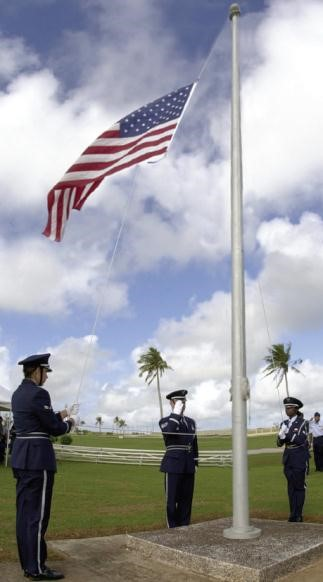20.6. Pledge of Allegiance
I Pledge Allegiance to the flag
of the United States of America
and to the Republic for which it stands
one Nation under God, indivisible,
with liberty and justice for all
20.7. National Anthem. 20.8. United States Air Force Hymn.
National Anthem Francis Scott Key |
United States Air Force Hymn Music by Henry Baker
Lyrics by Mary Hamilton |
Oh say can you see, by the dawn’s early light, What so proudly we hailed at the twilight’s last gleaming? Whose broad stripes and bright stars, through the perilous fight o’er the ramparts we watched were so gallantly streaming And the rockets red glare, the bombs bursting in air, gave proof through the night That our flag was still there! O say does that Star-Spangled banner yet wave? O’er the land of the free and the home of the brave! |
|
Lord, guard and guide the men who fly Through the great spaces of the sky; Be with them traversing the air In darkening storms or sunshine fair Thou who dost keep with tender might The balanced birds in all their flight Thou of the tempered winds be near That, having thee, they know no fear Control their minds with instinct fit What time adventuring, they quit The firm security of land; Grant steadfast eye and skillful hand Aloft in solitudes of space Uphold them with Thy saving grace. O God, protect the men who fly Thru lonely ways beneath the sky. |
20.9. High Flight.
HIGH FLIGHT
by Royal Canadian Pilot Officer John Gillespie Magee, Jr. |
Oh, I have slipped the surly bonds of earth And danced the skies on laughter-silvered wings; Sunward I’ve climbed, and joined the tumbling mirth of sun-split clouds and done a hundred things You have not dreamed of — wheeled and soared and swung High in the sunlit silence. |
|
Hov’ring there, I’ve chased the shouting wind along, and flung My eager craft through footless halls of air. Up, up the long, delirious, burning blue I’ve topped the windswept heights with easy grace Where never lark, or even eagle flew. And, while with silent, lifting mind I’ve trod The high untrespassed sanctity of space, Put out my hand, and touched the face of God. |
20.10. The Air Force Song.
Air Force Song History |
The only official history of the Air Force Song can be found in a copy of a script which was used on radio station WRC broadcast on 23 Feb 1944. Captain Alf Heiburg, leader of the Army Air Corps Band, interviewed Captain Robert Crawford, composer of the “Army Air Corps Song,” during this broadcast. Captain Crawford related the story, retold here: |
|
In 1939, when he was a civilian pilot, Robert Crawford was asked by a friend to enter a song contest. While flying his plane to Philadelphia, he composed a simple tune. The next day he wrote lyrics that, when combined with the tune, became what was known as the “Army Air Corps Song.” The United States Army Band made the first recordings of the song in 1939. It was later renamed the Army Air Forces Song, and eventually the Air Force Song. |
Air Force Song |
Off we go into the wild blue yonder, Climbing high into the sun Here they come zooming to meet our thunder At’m boys, giv’r the gun! Down we dive spouting our flame from under Off with one helluva roar! We live in fame or go down in flame Hey! Nothing’ll stop the U.S. Air Force! Minds of men fashioned a crate of thunder Sent it high into the blue; Hands of men blasted the world asunder, How they lived God only knew! Souls of men dreaming of skies to conquer Gave us wings, ever to soar. With Scouts before and bombers galore, Nothing can stop the U.S. Air Force! |
|
Here’s a toast to the host of those who Love the vastness of the sky, To a friend we send the message of his Brother men who fly. We drink to those who gave their all of old Then down we roar to score the rainbow’s Pot of gold. A toast to the host of the men we boast The U.S. Air Force! Off we go into the wild sky yonder Keep the wings level and true If you live to be a gray-haired wonder Keep the nose out of the blue Flying men, guarding our nations’s borders We’ll be there, followed by more In echelon, we’ll carry on Nothing can stop the U.S. Air Force! |
20.11. Total Force.
20.11.1. American Airmen from each component — Regular Air Force, Air National Guard, and Air Force Reserve — provide seamless airpower on a global scale every day. Over the past two decades, to meet combatant commander requirements and the demands of recurring deployments, the Air Force has increasingly called upon its Total Force. This elevated use of the Air National Guard and Air Force Reserve has transformed a traditionally strategic reserve force into a force that provides operational capability, strategic depth, and surge capacity.
20.11.2. In Total Force Integration associations, the Active and Reserve Components share equipment, facilities and resources, including aircraft, crews and maintenance, to carry out a common mission. In a classic association, the Active Component is the host unit, retaining weapon system responsibility, while sharing the mission with a Reserve or Guard tenant unit. For active associations the Reserve or Guard unit is host, with an Active Component tenant. Integrating with the Active Component in this way yields numerous synergistic benefits to the Air Force’s strength, including an improved ability to respond with surge capacity at a moment’s notice.
20.11.3. Air National Guard.
20.11.3.1. The heritage predates the establishment of the United States Air Force as a separate armed service in 1947: it shares a community-based militia tradition with the Army National Guard that dates from colonial times. State National Guards began forming aviation units as early as 1908, and New York’s 1st Aero Company was the first such organization mustered into federal service in 1916. Mobilization for World War I dissolved these state units, although many Guard personnel served in the Army Air Service. With the reorganization of the Army in 1920, the National Guard gained organic aviation units with federal standing. Twenty-nine observation squadrons had activated by the time the United States entered World War II, all absorbed into the Army Air Forces upon mobilization.
20.11.3.2. After federal service in the war, these 29 units became the core of the new Air National Guard, together with 43 more flying squadrons added to the Air National Guard after 1947. In keeping with the National Guard’s previous legal status, and in contrast to the Air Force Reserve, the Air National Guard retained a dual role: each state’s Air National Guard units remained at the governors’ disposal when not called into federal service. In either status, the federal government provided the bulk of the Air Guard’s funding. Initially, the Air National Guard’s nominal mission was as a short-range, daytime air defense force. In this role, the bulk of the Air National Guard’s aircraft were F-47 Thunderbolt and F-51 Mustangs left over from World War II, plus a few light bombers, B-26 Invaders. A small number of early jet fighters soon supplemented the initial propeller-driven force.
20.11.3.3. The Air Guard received its baptism by fire during the Korean War. Sixty-seven flying squadrons and approximately 45,000 Air National Guard members, some 80 percent of the force, were mobilized. Mobilization was complicated: some units took three to six months to become combat ready, and some never did. The Air National Guard still formed a substantial part of the wartime Air Force, with some units serving in combat, while others relieved deploying regular squadrons at home.
20.11.3.4. Based on Korean War experience, senior Air National Guard and Air Force leaders committed to build the Air National Guard into a more effective force, and the Air National Guard received modern equipment and better funding to that end. These efforts came to fruition when President John F. Kennedy mobilized over 21,000 Air National Guard members from 28 squadrons in 1961 as part of the United States response to the Berlin Crisis. The Air National Guard deployed 216 Air National Guard fighter aircraft with support personnel to Europe to reinforce North Atlantic Treaty organization. This movement, Operation Stair Step, was the largest aircraft deployment in Air National Guard history. The entire deployment across the Atlantic Ocean occurred without the loss of a single plane.
20.11.3.5. The war in Vietnam saw a few Air National Guard fighter squadrons deployed, and the Air Guard supplied some of the airlift into the theater. The Air Guard’s main role, however, was support for the Air Force’s commitments in Europe as the demands of operations in Southeast Asia taxed the regular force. The Air National Guard assumed aerial refueling responsibilities for Air Force fighters in Europe from 1967 to 1977. This effort, Operation Creek Party, demonstrated that the Air Guard could provide sustained support to the Air Force without resorting to mobilization by rotating forces of volunteer personnel operating aircraft drawn from Air National Guard squadrons. This approach remains virtually unchanged today.
20.11.3.6. After the Vietnam War, some significant missions moved to the Air National Guard. Air Guard KC-135 air refueling tankers began participating in the Strategic Air Command’s nuclear alert force in 1976. In 1977, the Air National Guard became the primary airlifters for United States Southern Command’s Operation Coronet Oak, which continues today. From 1978 to 1990, rotating Air National Guard fighter squadrons assumed responsibility for the air defense of the Panama Canal Zone under Operation Coronet Cove. The Air National Guard participated in Operation Just Cause, the 1989 invasion of Panama to expel its dictator, Manuel Noriega, and to install a democratically elected president. In the 1990s, Air Guardsmen manned radar stations and flew fighter aircraft in Latin America to monitor and report suspected drug-running aircraft. This operational experience served the Air Guard well in the Persian Gulf crisis of 1990-1991. Air National Guard fighters, tankers, airlifters, special operations, aeromedical evacuation, and security forces participated in the air campaign of the Persian Gulf War. During that time, 12,404 Air National Guard members were mobilized and deployed to Southwest Asia, Europe and other overseas locations as well as serving in the continental United States.
20.11.3.7. Following the Persian Gulf War and the end of the Cold War, the Air National Guard continued to operate world-wide, integrated with the Regular Air Force and the Air Force Reserve, jointly with the other services, and combined with North Atlantic Treaty Organization forces. The Air National Guard participated in several major operations involving humanitarian assistance, peacekeeping, and direct combat action. Some operations were extensions of those that involved the Air National Guard earlier in South America, but through the 1990s the Air National Guard gained more commitments, Bolstered by new capabilities, Air Guard flying and support units helped maintain the no-fly zones over Iraq, provided humanitarian assistance in Somalia and Rwanda, and supported peacekeeping forces in the Balkans and Haiti. The Air Force’s global mobility operations involved Air National Guard tanker and airlift forces on a daily basis. In 1997, the Air National Guard assumed responsibility for manning First Air Force, which maintained the air defenses of the continental United States. President Bill Clinton also mobilized 4,870 Air Guardsmen during the Kosovo War in 1999.
20.11.3.8. The Air National Guard played a critical role in the immediate United States response to the terrorist attacks of 11 September 2001 and the subsequent global military actions. In the immediate aftermath of 9/11, the Air National Guard improvised a greatly strengthened continental air defense system and bore the main burden of sustaining it. The combination of fighter patrols and 24-hour alerts at 26 Air National Guard bases across the United States put heavy stress on the Air National Guard fighter force in both training and readiness, but the wide geographic dispersal of its fighter units and its long standing role in continental air defense made the Air National Guard the right organization to execute the mission.
20.11.3.9. The Air National Guard’s aviation and support units also played critical roles in the wars in Afghanistan (Operation Enduring Freedom) and Iraq (Operation Iraqi Freedom). Flying and non-flying Air National Guard units deployed repeatedly to every operating base supporting those wars. When Operation Enduring Freedom began 7 October 2001, the Air National Guard participated in the initial combat operations in Afghanistan and have continued to participate in the mission ever since. Air National Guard airlift, tankers, A-10 and F-16 units, special operations, rescue, civil engineer, security forces, combat communication and many other units have repeatedly deployed to the region over the course of that war. When the United States invaded Iraq on 20 March 2003, the Air National Guard had 18,552 members on active duty participating in the invasion and serving in Afghanistan and other overseas operations. The six Air National Guard A-10 units participated in combat operations in Iraq and Afghanistan simultaneously. During the invasion of Iraq, the only A-10 presence in Afghanistan was an Air National Guard unit. Air Guard F-16C Block 30 fighters and a few A-10s equipped with Litening 2 targeting pods – a capability developed independently by the Air National Guard - provided air support for special operations units operating in the western desert of Iraq looking for SCUD missiles. In addition, Air National Guard F-16C Block 30 aircraft provided a unique capability as the last United States aircraft equipped with Theater Airborne Reconnaissance System pods. Intelligence Surveillance and Reconnaissance in general was a growing capability for deployed Air National Guard forces with the proliferation of Remotely Piloted Aircraft systems like the Predator.
20.11.4. Air Force Reserve.
20.11.4.1. Since formal establishment of the Air Force Reserve in April 1948, the Air Force Reserve has amassed a rich heritage with heroic accounts of responding to natural disasters, humanitarian crisis, and combat operations. Our history is also a study of changing, adapting, and evolving from a strategic force held in “reserve” into an operational Reserve force with the most advanced weapons systems.
20.11.4.2. Today, Citizen Airmen perform leading roles in military operations, humanitarian crisis and disaster relief around the globe. The Air Force Reserve consists of officers, enlisted and civil servants who are tasked by law to fill the needs of the armed forces whenever more units and people are required than are available within the Regular Air Force. More than 860,000 people make up the Ready, Standby, Retired and Active Duty Retired Reserve. This includes nearly 70,000 Selected Reservists who are “ready-now” participating in every job specialty and on the front lines of daily military operations around the globe. The Air Force Reserve is a combat-ready force of Citizen Airmen, stationed locally at over 60 locations throughout the United States and serving globally for every Combatant Command in air, space and cyberspace.
20.11.4.3. The Chief of Air Force Reserve, Headquarters Air Force, Pentagon, serves as the principal advisor on reserve matters to the Secretary of the Air Force and Air Force Chief of Staff. The Chief of Air Force Reserve is also dual-hatted as the Commander of Air Force Reserve Command, located at Robins Air Force Base, Georgia. The Commander of Air Force Reserve Command is responsible for organizing, training, and equipping all Air Force Reserve units. Air Force Reserve Command is composed of three Numbered Air Forces, 354 flying wings, 1 space wing, 1 Special Operations Wing, 11 flying groups, and 4 independent groups.
20.11.4.4. Circa 1917: The National Defense Act of 1916 directed the creation of an Officers Reserve Corps, an Enlisted Reserve Corps and the nation’s Air Service Reserve Program. For the first time, Reserve Corps were clearly a federal reserve force and not militia. The Reserve Corps were established on March 22, 1917, just weeks before the United States formally entered World War I. By the end of the war, more than 11,000 of Army Air Service pilots who fought were reserve officers. Notably, the First Reserve Aero Squadron deployed in the summer of 1917 for action in France. Later, the squadron went on to fight in the Pacific Theater in World War II, served at the forefront of the nuclear deterrence mission in the Cold War, and, still serving today as the 26th Space Aggressor Squadron, is the oldest squadron in the Air Force Reserve.
20.11.4.5. 1941: Reservists played a critical role in World War II. In the war’s early days 1,500 reserve pilots along with 1,300 non-rated officers and 400 enlisted Airmen were activated into the Army Air Corps. These included the legendary Jimmy Doolittle who was ordered to active duty to work in Detroit to convert automobile manufacturing plants into aircraft factories and later went on to lead “Doolittle’s Raiders,” the first American bombing attack on the Japanese mainland.
20.11.4.6. 1948: In a joint directive signed by General Omar Bradley, the Army Chief of Staff, and General Carl Spaatz, the Air Force Chief of Staff, dated April 14, 1948 the Army Air Corps Reserve was transferred to the Air Force officially becoming the Air Force Reserve.
20.11.4.7. 1950: The young Air Force Reserve was barely two years old when it mobilized nearly 147,000 reservists, many who were World War II veterans, for the Korean War from 1950 to 1953. The Armed Forces Reserve Act of 1952 refined the use of the Reserve Components in time of war or national emergency and established three levels of Air Force reservists – ready, standby, and retired.
20.11.4.8. 1960’s: In 1961, President John F. Kennedy called up the Air Force Reserve in response to the Berlin crisis. The mobilization included five Air Force Reserve C-124 aircraft units and 5,613 reservists. By 1962, an additional mobilization of 14,220 reservists and 422 aircraft were supporting operations during the Cuban Missile Crisis. Most experts believe that the mobilization had the effect of deterring war. Beginning in the early 1960s, the Air Force Reserve provided strategic airlift as well as counterinsurgency, close air support, tactical mobility, interdiction, rescue and recovery, intelligence, medical, maintenance, aerial port and air superiority until the United States ended its involvement in the Vietnam War.
20.11.4.9. 1970’s: In August 1970, the Department of Defense implemented the Total Force Policy and the Air Force Reserve became a multi-mission force flying the same modern aircraft as the active Air Force. In March 1973, Air Force Reserve C-141 and C-9 associate aircrews, medical, aeromedical, casualty assistance, legal, chaplain, and intelligence personnel supported Operation Homecoming—the return of the American prisoners of war from North Vietnam. That same year, the Air Force Reserve proved the concept of Global Mobility by flying hundreds of strategic airlift missions during the Arab-Israeli War.
20.11.4.10. 1980’s: For the most part, the nation was at peace for the next few years with the Air Force Reserve periodically engaged in emergency-response and humanitarian missions. This included the rescue and return of more than 700 American students from Grenada and evacuation of wounded Marines from Lebanon in 1983, the aerial-refueling of F-111 aircraft during the El Dorado Canyon raid on Libyan-sponsored terrorists in 1986, and Operation Just Cause that ousted Panama’s General Noriega in 1989-1990.
20.11.4.11. 1990’s: Nearly 23,500 Air Force Reservists were mobilized, and 15,000 volunteered for service in support of Operations Desert Shield and Desert Storm, in response to Saddam Hussein’s invasion of Kuwait in 1990. This began more than twenty years of continuous combat operations in Southwest Asia, while simultaneously conducting numerous emergency-response and humanitarian missions. These included combat operations over Bosnia, Serbia, and Kosovo, and Haiti as well as the evacuation of Clark Air Force Base during the eruption of Mount Pinatubo, and significant contributions to disaster relief operations in former Soviet republics, southern Turkey and northern Iraq, Somalia, and Haiti.
20.11.4.12. 2001: When terrorists attacked the United States on Sept. 11, 2001, Air Force reservists responded in full measure. Air Force Reserve F-16 fighter aircraft flew combat air patrols to protect American cities while KC-135 tankers and Airborne Warning and Control System aircraft supported security efforts. In October 2001, Operation Enduring Freedom began as United States military forces entered Afghanistan to combat the Taliban and eliminate terrorist sanctuaries. In March 2003, Operation Iraqi Freedom began in order to end Saddam Hussein’s regime. Air Force Reserve units and reservists played key roles in all combat operations as Air Force Reserve MC-130 Combat Talon aircraft became the first fixed-wing aircraft to penetrate Afghan airspace while Air Force Reserve F-16 crews performed the first combat missions. In 2004, more than 140 Air Force Reserve Combat Convoy Airmen served in the 1059th Air Expeditionary Force Truck Company. Air Force Reserve Security Forces served throughout Iraq and Afghanistan, and comprised the entire Security Force presence at Kirkuk Air Base with as many as 275 personnel. Air Force Reserve Explosive Ordnance Disposal provided extensive mission support in Iraq and Afghanistan by executing a broad scope of missions within and beyond the base security zone. Air Force Reserve Expeditionary Combat Support capabilities provided airfield operations, cargo and passenger handling, medical, security, intelligence, and personnel services.
20.11.4.13. Today and in recent years, Citizen Airmen have supported every Air Force core function and every Combatant Commander around the world. Air Force reservists were engaged in surge operations in Iraq and Afghanistan. They supported combat and humanitarian missions in Haiti, Libya, Japan, Mali and the Horn of Africa. Also, they’ve provided national disaster relief at home in the United States after Hurricanes Katrina and Sandy, the gulf oil spill and the wildfires in the western states. Throughout our history, Citizen Airmen have continually volunteered, allaying concerns that reservists would not be available when really needed. Since its inception, the Air Force Reserve evolved from an individual-mobilization-only force into an operational reserve that participates daily in missions around the globe. Today, Air Force reservists safeguard nuclear weapons and guide Global Positioning Satellites. From bases in the United States, reservists fly remotely piloted aircraft in combat half a world away. They track hurricanes out at sea and bring medical supplies and food into disaster areas to save lives around the world. Spanning six and a half decades – with the last two decades of continuous combat – the Air Force Reserve has fulfilled the legacy of early air pioneers and exceeded the potential seen by the visionaries who created it. For more information on the history of the Air Force Reserve, go to: www.afrc.af.mil/library/history/.
Section 20D—Career Fields
20.12. Career Fields Occupational Badges.
Air Force members are highly encouraged to wear their current occupational badge on all uniform combinations. A maximum of two occupational badges may be worn. When wearing two occupational badges, wear the one representing the current career field (regardless of level earned) in the top position. Exception: Chaplains and aeronautical badges are always worn in the top position when wearing two occupational badges. If authorized, place the second occupational badge in top position and centered ½ inch above the first one. Refer to Figure 1.1 for a listing of officer and enlisted occupational badges. Occupational badges are reflective of your Air Force specialty. See AFI 36-2903, Dress and Personal Appearance of Air Force Personnel for specific instructions on wear of occupational badges.
Figure 1.1. Occupational Badges |
|
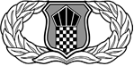 |
|
Acquisition & Financial Management |
Air Traffic Control |
Band |
|
|
|
Chaplain Service Support |
Civil Engineer |
Commander |
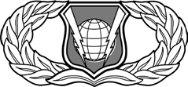 |
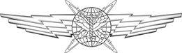 |
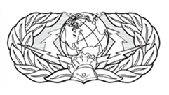 |
Command & Control |
Cyberspace |
Cyberspace Support |
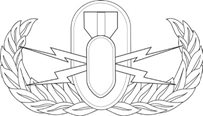 |
|
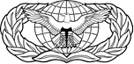 |
Explosive Ordnance Disposal |
Firefighter |
Force Protection |
|
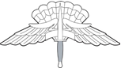 |
|
Force Support |
High Altitude Low Opening (HALO) |
Historian |

|
|
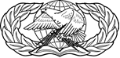 |
Intelligence |
Judge Advocate |
Logistics Plans |
|
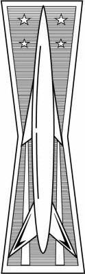 |
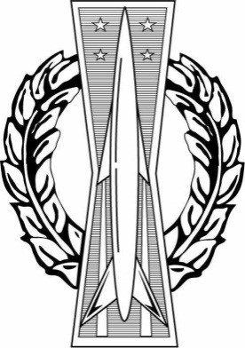 |
Meteorologist |
Missile |
Missile Operations |

|
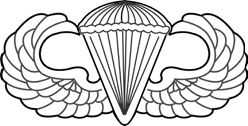 |
|
Operations Support |
Parachutist |
Paralegal |
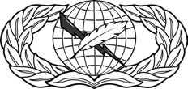 |
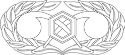 |
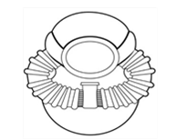 |
Public Affairs |
Readiness |
SCUBA |
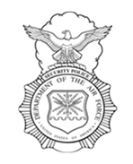 |

|
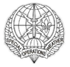 |
Security Police |
Services |
Special Operations Weather (SOWT) |
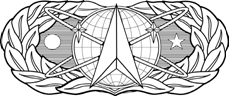 |
|
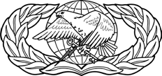 |
Space |
Space/Missile |
Supply Fuels |
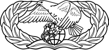 |

|
|
Transportation |
Weapons Director |
Chaplain Buddhist |
|
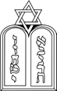 |
|
Chaplain Christian |
Chaplain Jewish |
Chaplain Muslim |
|
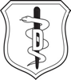 |
|
Biomedical Science Corps |
Dental Corps |
Enlisted Medical |
|
|
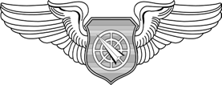 |
Medical Service Corps |
Nurse Corps |
Air Battle Manager |
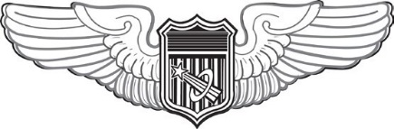 |
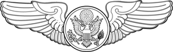 |
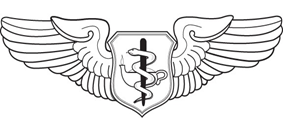 |
Astronaut |
Enlisted Aircrew |
Flight Nurse |
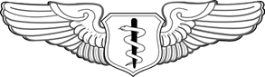 |
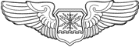 |
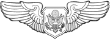 |
Flight Surgeon |
Navigator/Observer |
Officer Aircrew |
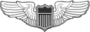 |
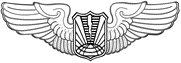 |
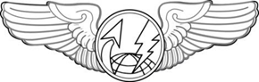 |
Pilot |
Remotely Piloted Aircraft (RPA) |
Sensor Operator |
20.13. Specialized Headgear.
20.13.1. The Department of the Air Force approved and authorized its first distinctive uniform for members of the Pararescue career field in 1966. The Air Force approved and authorizing for the combat control distinctive beret uniform in 1973 and began making other concessions of approving other distinctive beret uniforms for other career fields during the 1980s and subsequent decades.
20.13.2. Regardless of specialty or unit the approval of distinctive beret uniform for wear with service uniforms is not intended as self-recognition but as recognition directed towards a group fulfilling the accomplishment of unique duties associated with specific mission roles at an above average level of dependability and reliability. Generally speaking the beret provides recognition of all members of the group being volunteers to perform hazardous duties, completed specific standardized qualification training to provide a unique or extraordinary tactical capability, and willingly sustain strong level of personal and team/unit mission readiness to respond and accomplish quickly.
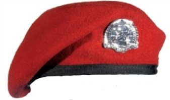 |
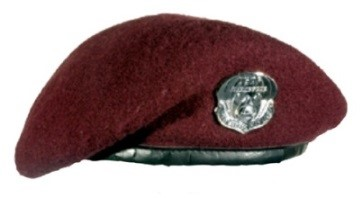 |
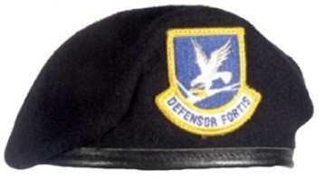 |
Combat Control and Special Tactics Officer (Scarlet) |
Pararescue and Combat Rescue Officer (Maroon) |
Security Forces (Blue) |
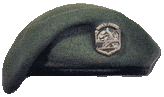 |
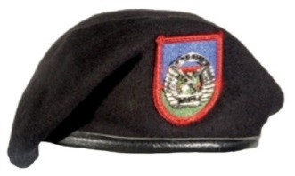 |
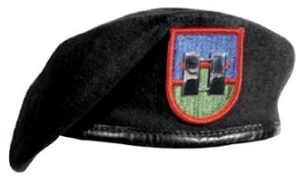 |
Survival, Evasion, Resistance and Escape (SERE) Team (Pewter Green) |
Tactical Air Control Party (Black) |
Tactical Liaison Officer (Black) |
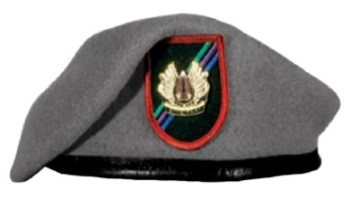 |
|
|
Weather Parachutist (Pewter Gray) |
|
|
20.14. Conclusion.
Air Force knowledge is important because it provides the framework of information required to understand the basic infrastructure of the Air Force such as weapon systems, vocabulary, and some Air Force heritage. In these few pages, you will find a small sampling of the knowledge you will need to be a successful Airman. I encourage you to study the priceless information contained in these pages as well as other sources such as the Air University (http://www.au.af.mil/au/awc/awcgate/awc-ldr.htm). Understanding this Air Force knowledge will give you the power to unleash the Airman inside you, live a career of success, and leave a lasting legacy for future generations to follow.